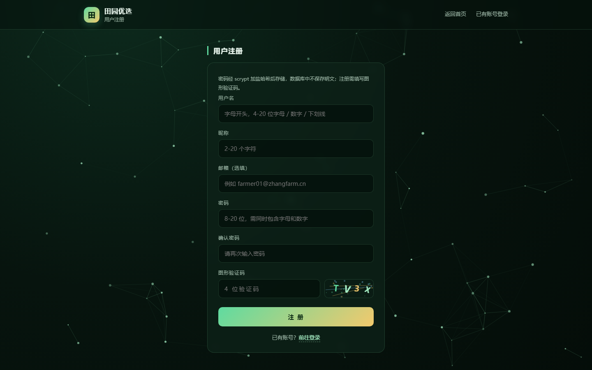

前台功能 · 10
用户注册
新用户注册页面，校验用户名、密码、昵称与邮箱，注册成功后引导前往登录。
register.html

页面说明
注册表单对用户名长度、密码强度与邮箱格式做前端校验，并通过图形验证码防止批量注册。
注册成功后页面给出成功提示并跳转到登录页；用户名已存在等情况由后端返回具体原因。
功能要点
- 用户名、昵称、密码与邮箱格式校验
- 两次密码一致性检查
- 图形验证码校验
- 注册成功跳转登录
- 后端错误信息展示
接口说明
| 方法 | 接口路径 | 说明 |
|---|---|---|
| GET | /api/auth/captcha |
获取图形验证码与验证码编号 |
| POST | /api/auth/register |
提交注册信息并创建用户 |
相关文件
register.html
js/register.js
backend/routes/auth.js